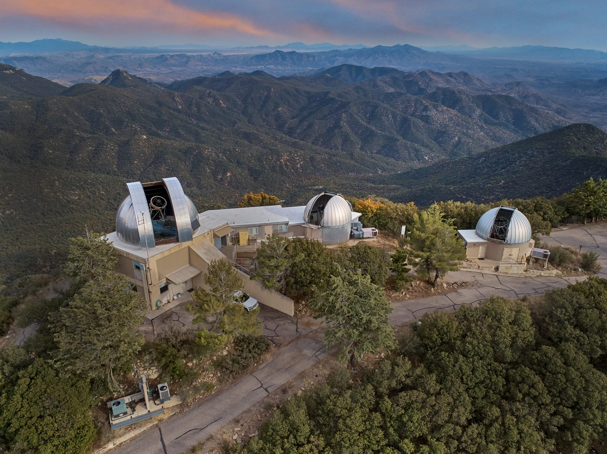

Site Visits
From mountaintop observatories to the lab where the next generation of giant telescope mirrors is made.

Day 2 · April 16 · Amado, AZFred Lawrence Whipple Observatory
Perched on Mt. Hopkins amid Southern Arizona's famed dark skies, the Fred Lawrence Whipple Observatory is a cornerstone of Smithsonian astronomy. Dinner will be served at the observatory dormitories near the Ridge telescopes.
 Day 2 · April 16
Day 2 · April 16
VERITAS
Participants will experience the observatory's world-class facilities, including the VERITAS gamma-ray observatory.
 Day 2 · April 16 · Evening
Day 2 · April 16 · Evening
MMT Observatory & Star Party
Private access to the MMT Observatory atop Mt. Hopkins, with a sunset Star Party and eyepiece observing under some of the darkest skies in the continental United States.
 Day 3 · April 17 · Tucson, AZ
Day 3 · April 17 · Tucson, AZ
Richard F. Caris Mirror Lab
A world-renowned engineering facility at the University of Arizona where giant lightweight telescope mirrors are cast and polished, supporting many of the world's most ambitious astronomical projects, including the Giant Magellan Telescope.